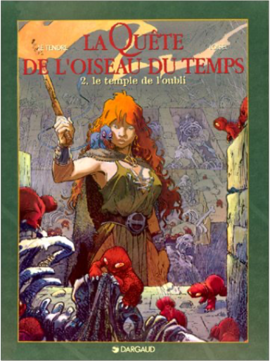
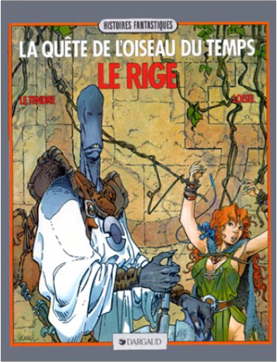
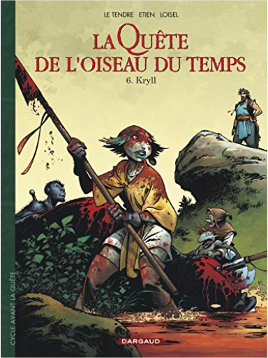

la quête de l'oiseau du temps, tome 1 : la conque de ramorLe Tendre, Loisel la quête de l'oiseau du temps, tome 1 : la conque de ramorLe Tendre, Loisel  De l'héroïc fantasy pour ceux qui n'aiment pas l'héroïc fantasy. On y trouve des héros, mais ils sont bien vieux ou bien malhabiles au maniement de l'épée. D'ailleurs, les seuls véritables bretteurs de l'histoire finiront tous très mal. On y trouve aussi une très jolie fille, mais elle se révèlera n'être qu'une illusion. Pourtant, en apparence, les lois du genre sont respectées. Un chevalier, Bragon, part à la recherche de l'Oiseau du temps, seule créature capable d'empêcher Ramos le dieu maudit de quitter sa prison... Tout le talent de Le Tendre au scénario et de Loisel au dessin, est de respecter somptueusement l'imagerie du genre en en détournant le sens. Devant le succès de La Quête (4 volumes ou intégrale), les auteurs ont lancé une nouvelle série racontant la jeunesse des héros. Avec la promesse de retrouver un jour la belle Pelisse, évaporée à la fin du premier cycle. Lidwine (auteur du Dernier loup d'Oz chez Delcourt )a dessiné L'Ami Javin, premier tome du nouveau cycle. —Jean-Pierre Fuéri la quête de l'oiseau du temps, tome 2 : le temple de l'oubliLe Tendre, Loisel De l'héroïc fantasy pour ceux qui n'aiment pas l'héroïc fantasy. On y trouve des héros, mais ils sont bien vieux ou bien malhabiles au maniement de l'épée. D'ailleurs, les seuls véritables bretteurs de l'histoire finiront tous très mal. On y trouve aussi une très jolie fille, mais elle se révèlera n'être qu'une illusion. Pourtant, en apparence, les lois du genre sont respectées. Un chevalier, Bragon, part à la recherche de l'Oiseau du temps, seule créature capable d'empêcher Ramos le dieu maudit de quitter sa prison... Tout le talent de Le Tendre au scénario et de Loisel au dessin, est de respecter somptueusement l'imagerie du genre en en détournant le sens. Devant le succès de La Quête (4 volumes ou intégrale), les auteurs ont lancé une nouvelle série racontant la jeunesse des héros. Avec la promesse de retrouver un jour la belle Pelisse, évaporée à la fin du premier cycle. Lidwine (auteur du Dernier loup d'Oz chez Delcourt )a dessiné L'Ami Javin, premier tome du nouveau cycle. —Jean-Pierre Fuéri la quête de l'oiseau du temps, tome 3 : le rigeLe Tendre, Loisel De l'héroïc fantasy pour ceux qui n'aiment pas l'héroïc fantasy. On y trouve des héros, mais ils sont bien vieux ou bien malhabiles au maniement de l'épée. D'ailleurs, les seuls véritables bretteurs de l'histoire finiront tous très mal. On y trouve aussi une très jolie fille, mais elle se révèlera n'être qu'une illusion. Pourtant, en apparence, les lois du genre sont respectées. Un chevalier, Bragon, part à la recherche de l'Oiseau du temps, seule créature capable d'empêcher Ramos le dieu maudit de quitter sa prison... Tout le talent de Le Tendre au scénario et de Loisel au dessin, est de respecter somptueusement l'imagerie du genre en en détournant le sens. Devant le succès de La Quête (4 volumes ou intégrale), les auteurs ont lancé une nouvelle série racontant la jeunesse des héros. Avec la promesse de retrouver un jour la belle Pelisse, évaporée à la fin du premier cycle. Lidwine (auteur du Dernier loup d'Oz chez Delcourt )a dessiné L'Ami Javin, premier tome du nouveau cycle. —Jean-Pierre Fuéri  la quête de l'oiseau du temps, tome 4 : l'oeuf des ténèbresLe Tendre, Loisel la quête de l'oiseau du temps, tome 4 : l'oeuf des ténèbresLe Tendre, Loisel De l'héroïc fantasy pour ceux qui n'aiment pas l'héroïc fantasy. On y trouve des héros, mais ils sont bien vieux ou bien malhabiles au maniement de l'épée. D'ailleurs, les seuls véritables bretteurs de l'histoire finiront tous très mal. On y trouve aussi une très jolie fille, mais elle se révèlera n'être qu'une illusion. Pourtant, en apparence, les lois du genre sont respectées. Un chevalier, Bragon, part à la recherche de l'Oiseau du temps, seule créature capable d'empêcher Ramos le dieu maudit de quitter sa prison... Tout le talent de Le Tendre au scénario et de Loisel au dessin, est de respecter somptueusement l'imagerie du genre en en détournant le sens. Devant le succès de La Quête (4 volumes ou intégrale), les auteurs ont lancé une nouvelle série racontant la jeunesse des héros. Avec la promesse de retrouver un jour la belle Pelisse, évaporée à la fin du premier cycle. Lidwine (auteur du Dernier loup d'Oz chez Delcourt )a dessiné L'Ami Javin, premier tome du nouveau cycle. —Jean-Pierre Fuéri  la quête de l'oiseau du temps, avant la quête, tome 5 - l'empriseLe Tendre, Loisel la quête de l'oiseau du temps, avant la quête, tome 5 - l'empriseLe Tendre, Loisel Raya, la fille du prince sorcier, a été tuée lors d'un traquenard préparé par le sinistre ordre du Signe alors qu'elle était sous la protection du chevalier Bragon et de son élève Bulrog. Ces derniers ont survécu, mais Bragon est affaibli par une chute qui l'a rendu amnésique, et son esprit est contrôlé par un vieil homme qui appartient à l'ordre du Signe. Bulrog a réussi à rejoindre la famille de Bragon, il doit maintenant prévenir Mara et son père ? et, pour cela, éviter les espions qui ont manigancé ce piège et qui entourent le prince et sa fille. Bientôt, le bruit court que Bragon a rejoint l'ordre, et la peur envahit le pays d'Akbar... la quête de l'oiseau du temps, avant la quête, tome 6 - kryllLe Tendre, Loisel Le chevalier Bragon poursuit son périple au coeur de des terres éclatées de La Marche et affronte la secte de l'Ordre du Signe, de plus en plus menaçante. Mais Bragon, esseulé depuis la mort du père de Mara, peut compter sur l'aide de Bulrog qu'il forme aux armes, de la même façon qu'il fut formé au combat par Le Rige. La Conque de Ramor, protégée par les habitants de la cité des Gris-Grelets, est menacée, devenant un objet de convoitise et un enjeu pour chaque camp, notamment pour la secte de l'Ordre du Signe. Afin d'avoir le champ libre, elle doit d'abord se débarrasser de Bragon et fait alors appel à la tribu des Méridines dont fait partie Kryll, une jeune femme vierge. Les femmes de cette tribu ont en effet un terrible pouvoir, celui de secréter une substance mortelle qui s'insinue dans le corps de leur premier amant... |


 Made with Delicious Library
Made with Delicious LibraryNancy, State zipflap congrotus delicious library Thomas, Julien